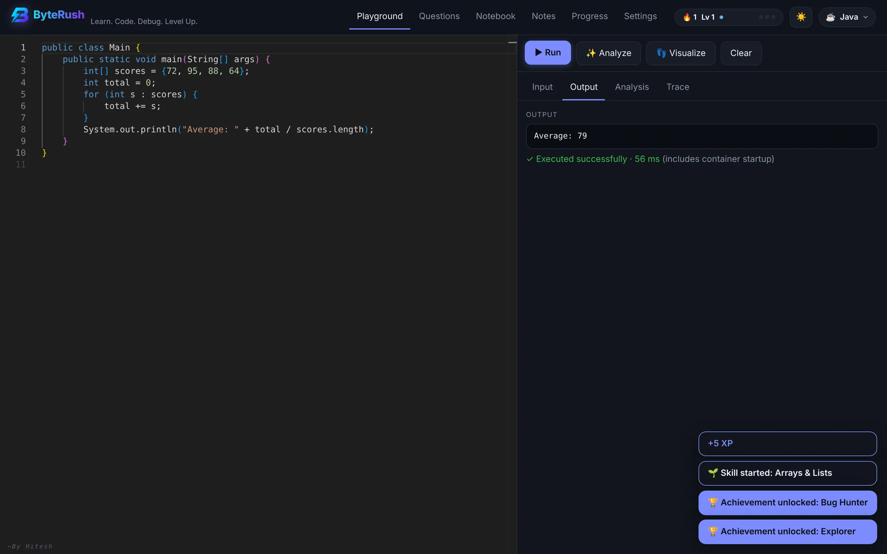
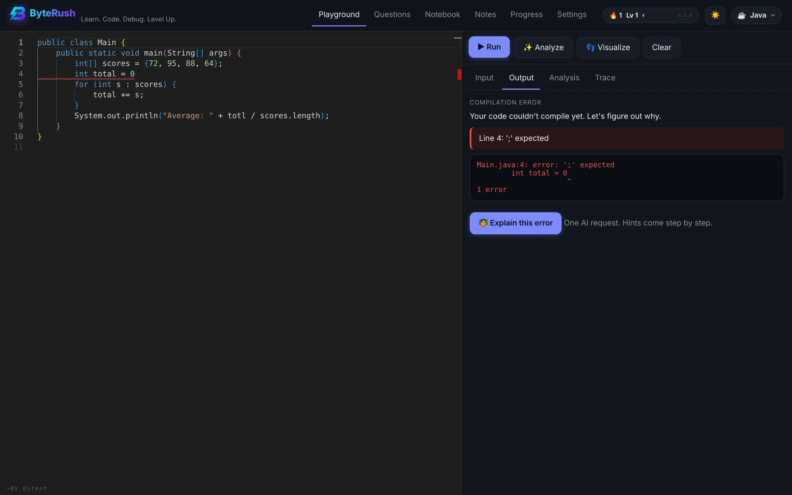
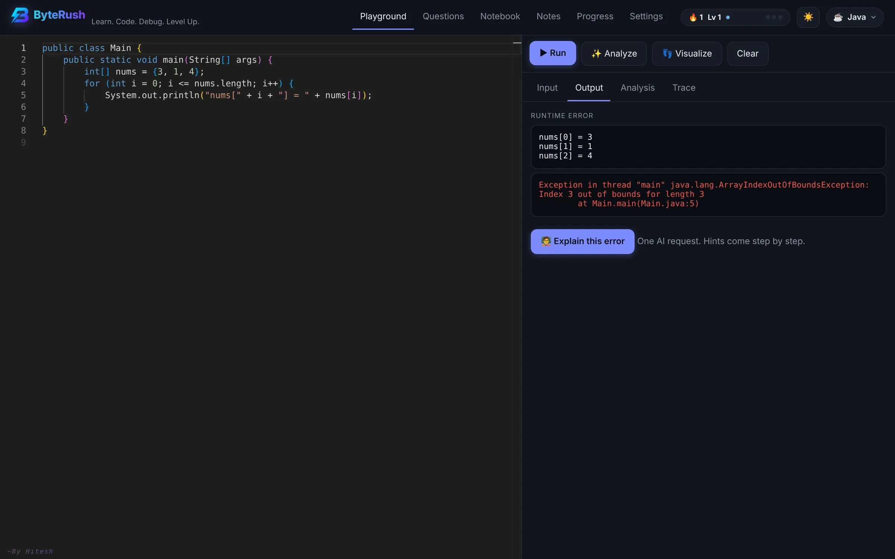
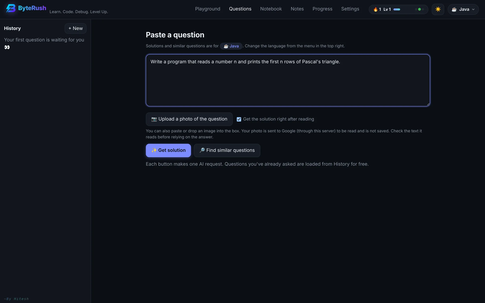
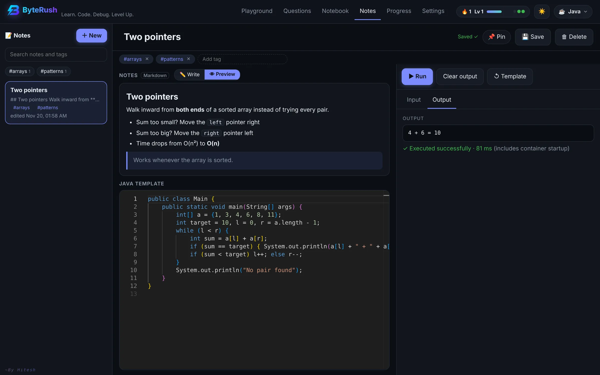
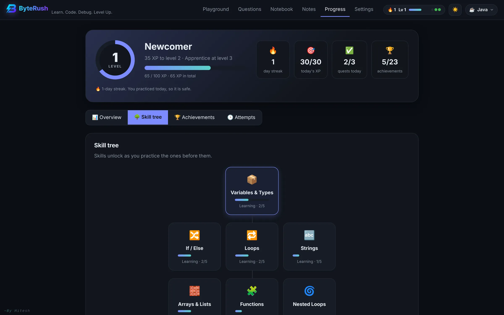
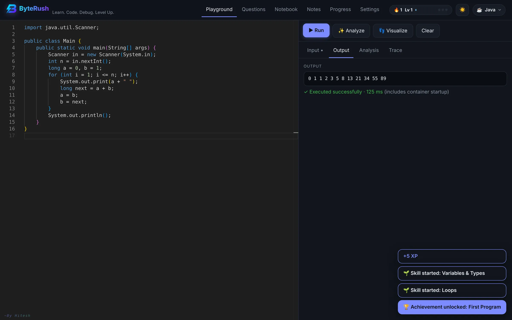

Learn. Code. Debug. Level Up.
A coding-practice app that runs on your own computer. Write code, run it the moment you press a key, and keep practicing with the Wi-Fi off.
$ byterush run Main.java
Write it. Run it. See it.
Type your program, give it input, press Run. Output shows up right next to your code, compile errors are marked on the exact line, and crashes come with an explanation.
- Input tabType what your program reads, just like a terminal.
- OutputResults land beside your code the moment it finishes.
- Line markersCompile errors point at the exact line that broke.
- Crash notesRuntime errors are explained in plain language.
$ javac Main.java
Red lines become lessons.
A missing semicolon or a misspelled variable stops the compile. ByteRush shows what broke, where, and why. Drag the handle to watch the same program get fixed.


- ExplanationWhat the error means
- HintWhere to look
- Stronger hintWhat to change
- The fixOnly when you ask for it

recording on its way
The Error Coach walking through explanation, hint, stronger hint and fix. It uses the AI, so it needs internet and a free Gemini key.
$ byterush read question.jpg
Snap the question. Skip the typing.
Upload a photo of a question, paste a screenshot, or drop an image into the box. ByteRush reads it into text, writes a solution in your language, and checks it against test cases before showing it to you.

- upload, paste or drop
- read into text
- solve in your language
- verify with tests
recording on its way
A photo turning into a verified solution. Reading photos uses the AI, so it needs internet and a free Gemini key.
$ byterush submit
Graded like the real thing.
Run your solution with your own input, or submit it against hidden tests that never leave your computer. You get a score out of 100.
- Correctness
- 0 points from hidden tests passed
- Efficiency
- 0 points, on request
- Code quality
- 0 points, on request
Efficiency and code quality are rated by the AI in one request and scale with the share of tests you passed.
recording on its way
Submitting a solution and watching the hidden tests and score come in. Practice problems are created by the AI, so this one is recorded with a Gemini key.
$ byterush save --folder Arrays
A notebook that runs.
Paste a question and your code onto a ruled page and save it as Q1, Q2, Q3. Sort them into folders, star the important ones, and run any of them again with one click.
Notes, with code you can run.
Write what you learned in Markdown, tag it, pin it, and keep a runnable template right beside it.

$ byterush stats
Watch yourself level up.
XP comes only from real practice and is capped per day. Streaks forgive a missed day. Skills grow as you use them, and achievements unlock along the way.



- 🏆First ProgramRun a program successfully
- 🐛Bug HunterGet a failing program to run
- 🧭ExplorerPractice 3 different skills
- ✨3 Day StreakPractice 3 days in a row
$ wifi off
Wi-Fi off. Still compiling.
ByteRush runs your code on your own computer, with Java built in. Planes, trains and patchy hostel Wi-Fi are all fine.
- Run code in every language
- Open your notebook
- Read and write notes
- Track XP, streaks and skills
- AI features need internet and a free Gemini key
$ byterush --lang
Pick your language.
Each language keeps its own history, notebook and notes. Questions and practice tests are written in the language you choose.

Why it feels different.
- Your computer does the work.Code compiles and runs locally, so there's no queue and no server waking up.
- No connection needed.Run, save and practice anywhere. Java is already inside.
- Feedback in a blink.Output, error lines and crash notes the moment a run ends.
- AI when you want it.Solutions, hints and analysis with your own free Gemini key.
- Practice with structure.Questions, hidden tests, scores and a notebook that keeps it all.
- Progress you can see.XP, streaks, a skill tree and 23 achievements.
$ byterush install
Download ByteRush.
The latest version. Free.
Not sure which Mac you have? Open the Apple menu and choose About This Mac. If it says “Chip: Apple M…”, choose Apple Silicon.
Install in a minute.
ByteRush is free and not sold through an app store, so your computer asks you to confirm it once.
- Open the downloaded
ByteRush-mac-….dmgand drag ByteRush into Applications. - Open ByteRush from Applications. macOS says it “could not verify” the app. Click Done.
- Open System Settings → Privacy & Security, scroll down and click Open Anyway next to ByteRush, then confirm.
- That's it. From now on ByteRush opens with a normal double-click.
Python, C and C++ use Apple's free developer tools. If ByteRush says they're missing, open Terminal and run xcode-select --install. Java is already included.
- Run the downloaded
ByteRush-windows-x64.exe. - If Windows shows “Windows protected your PC”, click More info → Run anyway.
- Follow the installer. ByteRush appears on your Desktop and in the Start menu.
Java is already included. For Python, install it from python.org (tick “Add to PATH”). For C and C++, install WinLibs (gcc). Restart ByteRush afterwards.
Just want a quick look?
Try the online demo in your browser. It's slower than the app because it runs on a small free server, and it may take up to a minute to wake up.
Open the online demo